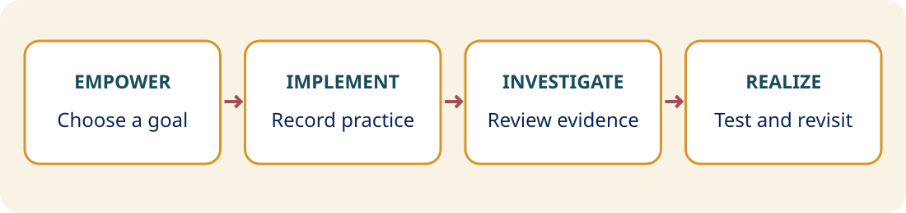

Choose a teacher-directed goal
Participation, questioning, thinking time, understanding, or student explanations.
Plan
One goal, one short teaching segment, one thoughtful conversation.
Participation, questioning, thinking time, understanding, or student explanations.
Begin with approximately 10–15 minutes, following the TCEA article and district requirements.
Teacher watches privately first; examine relevant moments together.
Use Notice-Wonder-Next to select a manageable adjustment.
Try it in a subsequent lesson.
Compare evidence: what changed, improved, remains uncertain, or needs another attempt?
Before recording, agree on why the goal matters, what success would look like, what to capture, access, deletion, and a conversation date. Capture only the evidence needed. Before meeting, invite the teacher to identify a strength, an interesting pattern, and a question.
During the conversation, start with the teacher’s interpretation. Afterward, agree on one adjustment, when to test it, evidence to collect, and a follow-up date. Revisit the goal and compare what happened.
Focus: participation during questioning. Evidence: the number of students producing a response and the quality of explanations. Change: individual thinking and writing before sharing. Follow-up: record a comparable segment and examine the same evidence.

Teacher chooses a meaningful instructional goal. What do you want to learn about your teaching?
Record a focused segment. What instructional moment should we examine?
Review the evidence together. What patterns do we notice?
Identify growth and next steps. What might you try next, and how will you review the results?